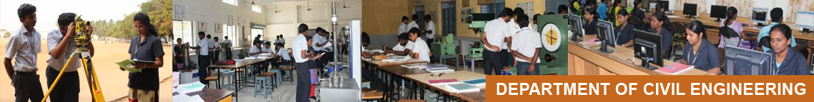

Faculty Members
Dr.P.S.Kothai
Dr.S.Anandakumar
Dr.K.Nirmalkumar
Dr.S.Krishnamoorthi
Dr.P.Chandrasekaran
Dr.S.Balaji
K.Sadasivam (ADJUNCT FACULTY)
Dr.S.Suchithra
Dr.T.Pradeep
Dr.G.S.Rampradheep
Vision
To become a center of excellence to meet the global challenges in the diversified field of Civil Engineering.
Mision
Civil Engineering is committed
- To impart quality Education through effective teaching learning methods.
- To encourage students to pursue research activities and to collaborate with industries to promote consultancy activities.
- To develop engineers who can participate in the technical advancement and social upliftment of the society.
Objective
The objective of Civil Engineering Department is to disseminate the knowledge above latest technologies in Civil Engineering to the students so that they cater the demand of builders/contractors and construction industry in and around the institution as well as to the needs of the country and abroad
Programme Outcomes
Graduates of Civil Engineering will:
| PO1 |
Engineering knowledge: the knowledge of mathematics, science, engineering fundamentals, and an engineering specialization to the solution of complex engineering problems. |
| PO2 |
Problem analysis:Identify, formulate, review research literature, and analyze complex engineering problems reaching substantiated conclusions using first principles of mathematics, natural sciences, and engineering sciences. |
| PO3 |
Design/development of solutions:Design solutions for complex engineering problems and design system components or processes that meet the specified needs with appropriate consideration for the public health and safety, and the cultural, societal, and environmental considerations. |
| PO4 |
Conduct investigations of complex problems:Use research-based knowledge and research methods including design of experiments, analysis and interpretation of data, and synthesis of the information to provide valid conclusions. |
| PO5 |
Modern tool usage:Create, select, and apply appropriate techniques, resources, and modern engineering and IT tools including prediction and modeling to complex engineering activities with an understanding of the limitations. |
| PO6 |
The engineer and society: Apply reasoning informed by the contextual knowledge to assess societal, health, safety, legal and cultural issues and the consequent responsibilities relevant to the professional engineering practice. |
| PO7 |
Environment and sustainability: Understand the impact of the professional engineering solutions in societal and environmental contexts, and demonstrate the knowledge of, and need for sustainable development. |
| PO8 |
Ethics: Apply ethical principles and commit to professional ethics and responsibilities and norms of the engineering practice. |
| PO9 |
Individual and team work: Function effectively as an individual, and as a member or leader in diverse teams, and in multidisciplinary settings. |
| P010 |
Communication: Communicate effectively on complex engineering activities with the engineering community and with society at large, such as, being able to comprehend and write effective reports and design documentation, make effective presentations, and give and receive clear instructions. |
| P011 |
Project management and finance: Demonstrate knowledge and understanding of the engineering and management principles and apply these to one’s own work, as a member and leader in a team, to manage projects and in multidisciplinary environments. |
| P012 |
Life-long learning: Recognize the need for, and have the preparation and ability to engage in independent and life-long learning in the broadest context of technological change. |
PROGRAM SPECIFIC OUTCOMES (PSOs)
| PSO12 |
Understand the requirement of the industry and perform effectively with professional skills. |
| PSO2 |
Apply advanced and innovative techniques and methodologies in Civil Engineering Practices. |